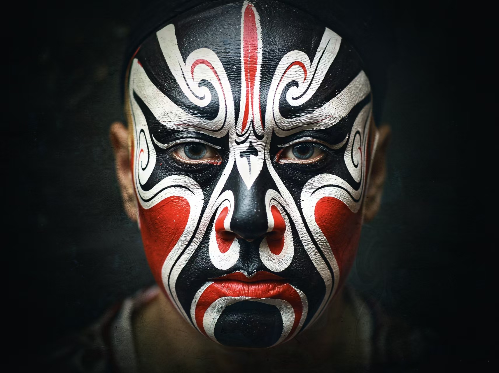
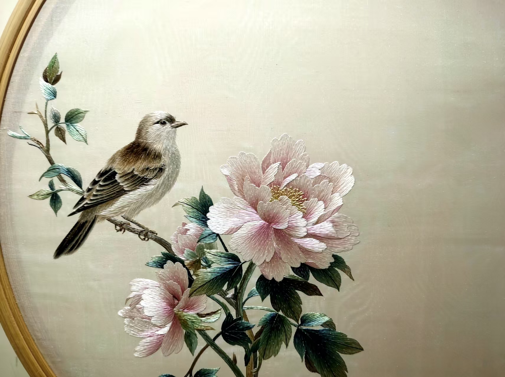
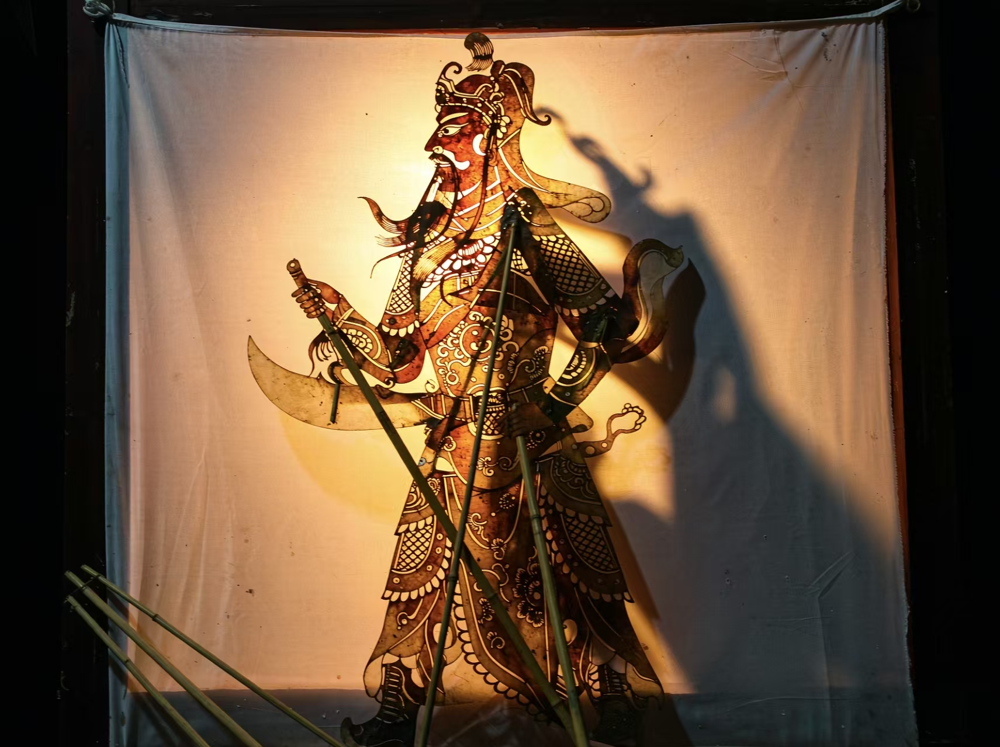
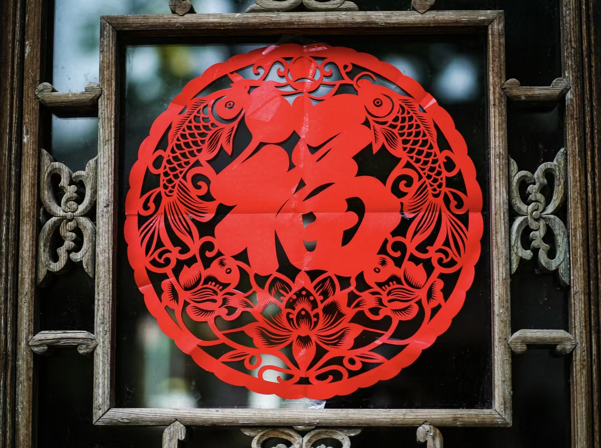
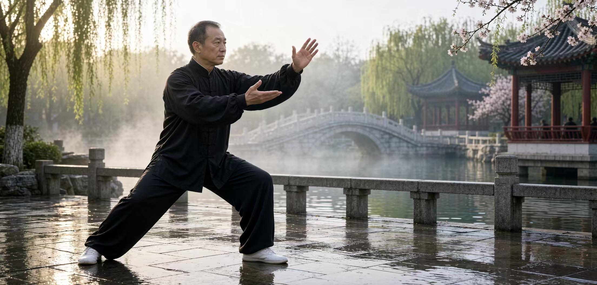
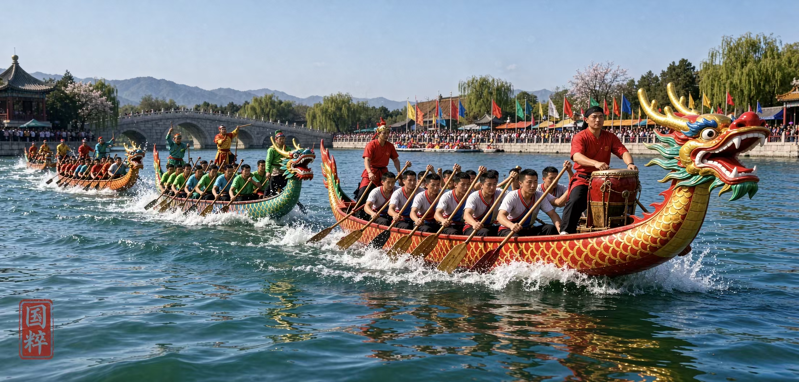
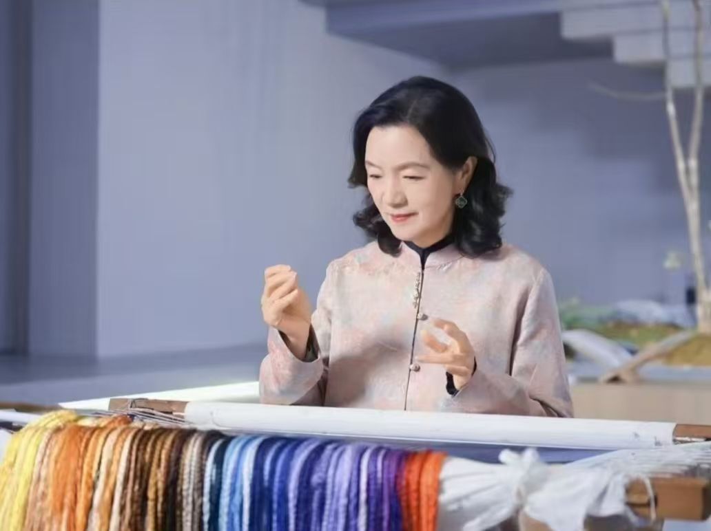

传统戏剧
国家级非物质文化遗产
传承华夏薪火 · 守护非遗根脉
华夏非遗致力于记录、传播、展示中华民族千百年沉淀下来的非物质文化遗产。 从京剧的唱念做打到苏绣的飞针走线，从剪纸的镂空艺术到皮影的光影流转， 每一项技艺都凝结着一代又一代匠人的智慧与初心。
国家级非遗代表性项目名录
NATIONAL INTANGIBLE CULTURAL HERITAGE
文民间文学
音传统音乐
舞传统舞蹈
戏传统戏剧
曲曲艺
体传统体育
美传统美术
技传统技艺
医传统医药
俗民俗
璀璨非遗
FEATURED HERITAGE ITEMS

传统技艺苏绣作品《花鸟》

传统戏剧华阴皮影人物剪影

传统美术中国剪纸窗花作品

传统体育太极拳行云流水

民俗端午龙舟竞渡
匠心传承
REPRESENTATIVE INHERITORS

国家
级传承
级传承
代表性传承人 · FEATURED INHERITOR
姚 建 萍
国家级非遗项目（苏绣）代表性传承人 · 中国工艺美术大师
- 从艺 深耕苏绣艺术四十余载，师从"苏绣皇后"任嘒閒，承继传统又自成一格。
- 代表作品 《仕女图》《猫》《父亲》等一百二十余件，多次作为国礼赠送国际政要。
- 艺术特色 独创"融针绣"，将油画光影、摄影层次与书画意境熔于一炉。
- 传承实践 设立刺绣艺术馆与传习所，带徒授艺、走进校园，推动苏绣融入当代生活。
- 主要荣誉 中国工艺美术大师，作品被中国美术馆、国家博物馆等机构收藏。
"每一针都要有自己的呼吸，绣品才会有生命。我希望苏绣不只是技艺， 更能走进当代生活，让世界看见东方美学的温度。"